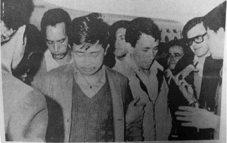
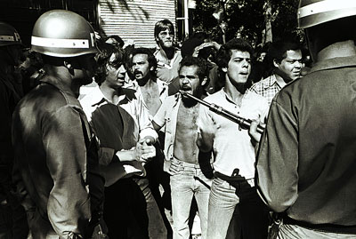
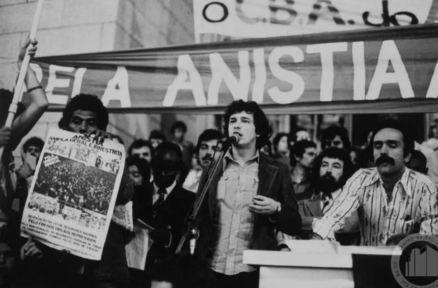

03 — Archivo visual
Imágenes que documentan
Pasa el cursor sobre cada imagen para ver el contexto.





Comissão Nacional da Verdade · Brasil · 2012–2014
Explora las voces, los archivos y las historias de quienes exigieron verdad en Brasil.
Iniciar recorrido
Entre 1964 y 1985, Brasil vivió bajo una dictadura militar. El Estado empleó la represión sistemática: desapariciones forzadas, tortura institucionalizada, censura y exilio. Decenas de miles de personas sufrieron la violencia de un régimen que se presentaba como garante del orden.
En 2012, la Comissão Nacional da Verdade inició su trabajo para documentar esos crímenes y dar nombre a las víctimas. Su informe final, entregado en 2014, identificó a 191 personas asesinadas o desaparecidas y llamó a la justicia.
Golpe militar. El Congreso suspendido, la Constitución ignorada.
Acto Institucional N°5. Censura total y detenciones masivas.
Ley de Amnistía. Regreso del exilio, pero sin juicio a los victimarios.
La CNV entrega su informe final. Nombrar es el primer acto de justicia.
Haz clic en cada perfil para escuchar su historia.
Clair Martins
Activista
"Ellos hacían una conjunción de tipos de tortura. Entonces, la tortura física acoplada a la tortura psicológica."
Escuchar testimonio ▶José Alves Firmino
Soldado
"Entre 1992 y 1995 fue una verdadera destrucción de los documentos del DOI-CODI. Esta destrucción no fue solo en el ámbito del DOI, sino del Centro de Inteligencia del Ejército"
Escuchar testimonio ▶Belisário Dos Santos
Abogado de militante comunistas
"Actuar en la defensa de presos políticos y estudiantes perseguidos era la forma que teníamos de oponernos al régimen militar"
Escuchar testimonio ▶Clóvis de Castro
Militante comunista
"Yo realmente opté por quedarme en el país y tenía plena consciencia, no solo cuando fui al Partido Comunista, sino también después cuando hice mi opción por la lucha armada. Yo sabía de todos los riesgos por los cuales iba a pasar"/p> Escuchar testimonio ▶
Pasa el cursor sobre cada imagen para ver el contexto.



"La memoria vive cuando es compartida."
Aquí, tu voz también forma parte del archivo.
Voces de esta sesión